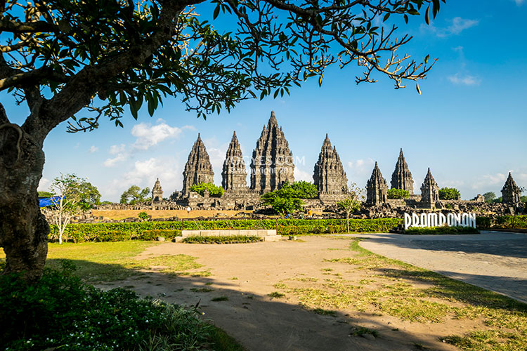

Rekomendasi Tempat Wisata
Candi Prambanan
Candi Prambanan (Jawa: ꦕꦟ꧀ꦝꦶꦥꦿꦩ꧀ꦧꦤꦤ꧀, translit. Caṇḍi Prambanan) adalah bangunan candi bercorak agama Hindu terbesar di Indonesia yang dibangun pada abad ke-9 Masehi. Candi yang juga disebut sebagai Rara Jonggrang ini dipersembahkan untuk Trimurti, tiga dewa utama Hindu yaitu dewa Brahma sebagai dewa pencipta, dewa Wisnu sebagai dewa pemelihara, dan dewa Siwa sebagai dewa pemusnah.
Jl. Raya Solo - Yogyakarta No.16, Kranggan, Bokoharjo, Kec. Prambanan, Kabupaten Sleman, Daerah Istimewa Yogyakarta 55571
Candi Borobudur

Candi Borobudur adalah sebuah candi Buddha yang terletak di Borobudur, Magelang, Jawa Tengah, Indonesia. Candi ini terletak kurang lebih 100 km di sebelah barat daya Semarang, 86 km di sebelah barat Surakarta, dan 40 km di sebelah barat laut Yogyakarta.
Alamat: Jl. Badrawati, Kw. Candi Borobudur, Borobudur, Kec. Borobudur, Kabupaten Magelang, Jawa Tengah
Heha Ocean View
HeHa Ocean View adalah tempat wisata kekinian yang sangat populer dengan banyak spot foto keren berlatar belakang laut. HeHa Ocean View bisa dijangkau dalam 1,5 jam dari Kota Jogja
Alamat: Bolang, Girikarto, Kec. Panggang, Kabupaten Gunung Kidul, Daerah Istimewa Yogyakarta 55872